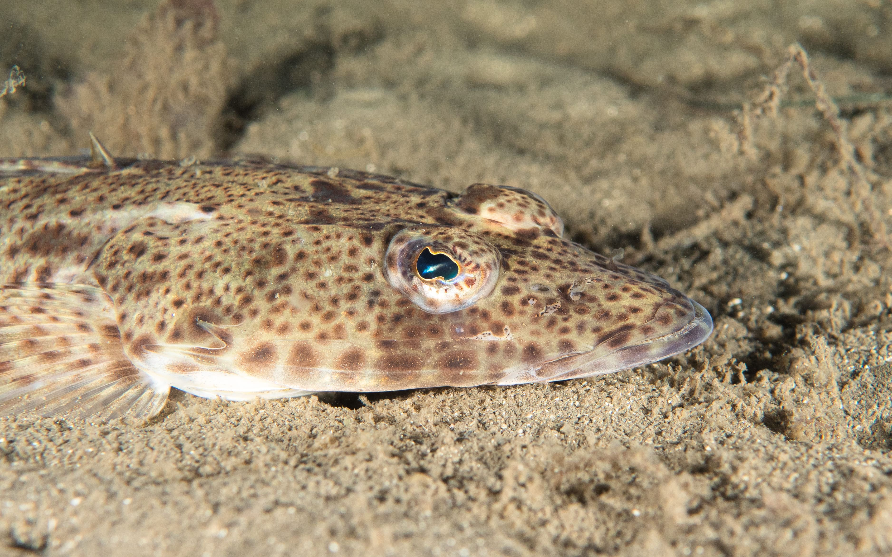

BigFish
The sustainable fishing game
Suitable for ages 10+

Best for groups of 2-5 players
The BigFish card game informs and engages everyone interested in fishing or marine ecosystems through fun play.
The goal of the game is to collect the maximum number of points from catching fish, while also preserving a healthy ecosystem and keeping some big fish to improve future catches.


Crowdfunding!
To make the game available in Tasmania and worldwide and to run our engagement activities we are launching a crowdfunding campaign. Currently the game is not available for sale and you can only the game through crowdfunding. By pledging to this campaign you will secure your copy of the game and support education and engagement activities on marine science and sustainable recreational fishing. The crowdfunding will launch on September, 15, 2024.
DD
DAYS
:
:
HH
HOURS
:
:
MM
MIN
:
:
SS
SEC
Would you like to get reminded about the crowdfunding launch? You can get the game, expansion pack, prints of amazing fish drawings signed by the artist, t-shirt and other prizes. You will get no more than one email per month and two reminders about the crowdfunding start.
Playing the game

Big fish are worth more points than small fish, so players are tempted to catch them. But the presence of big fish also allows players to draw new cards, spawn new fish and also grow them. The player has to find a balance between collecting points by catching fish and preserving fish for good fishing opportunities.

In addition to fishing, other natural and human-induced events occur throughout the game, such as fisheries research, poor water quality, citizen science, illegal fishing, ocean acidification, and others.
These events create unpredictability and new challenges and inform us on how humans impact aquatic ecosystems.

Main messages
To win the game you need a good strategy and luck. There is always an element of chance, but a good fisher and player knows how to their luck. In this game you need to think about the long term strategy! The game has three main messages:

1. Big fish are important
Preserving the big fish in the oceans, lakes and rivers is important for fish reproduction and resilience, ecosystem balance or simply because big fish are beautiful.
2. Big fish are mostly gone
Due to commercial and recreational fishing, big fish have mostly vanished from rivers, lakes and oceans.
3. Big fish can return
Fish grow relatively fast and if we take the right measures, we can restore them within our lifetimes and enjoy healthy ecosystems again.
BigFish has been created by a passionate team who wish players to know more, care more, and contribute.
Who we are
This game has been developed by the Institute of Marine and Antarctic Sciences (IMAS), University of Tasmania team, led by Matt Testoni, Asta Audzijonyte and Amy Coghlan. All artwork is original and produced by Amy Coghlan (drawings) and Matt Testoni (photos, design).
Game testing, advice, interesting facts and many other details have been provided by many researchers, naturalists, students, friends, anglers, divers and game enthusiasts. Thank you.

Contact us
If you would like to learn more about our work, adapt the game to your ecosystem, apply the game to your teaching or support our work please contact us at info@fishsizeproject.org.
Supporters
2020 Pew Fellowship in Marine Conservation to Asta.

You can support the game by pledging on our crowdfunding or by contacting us. If you would like to sponsor a card, representing your organisation or initiative, get in touch and we will discuss. We will only include cards that are truly important for sustainable fisheries and marine ecosystems.